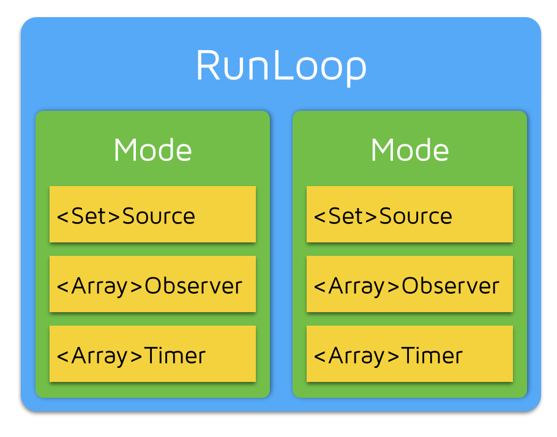
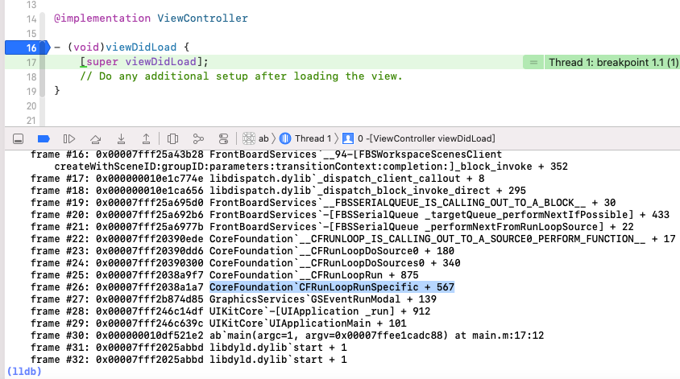

[TOC]
RunLoop
RunLoop 通过内部维护的事件循环（Event Loop）来对事件/消息进行管理的一个对象
没有消息需要处理时，休眠以避免资源占用，由用户态切换到内核态
有消息需要处理时，立刻被唤醒，由内核态切换到用户态·
RunLoop 是一个对象，循环中处理程序运行过程中出现的各种事件（如触摸事件、UI刷新事件、定时器事件、Selector事件）和消息，从而保持程序持续运行，没有事件处理的时候会进入睡眠，节省 CPU 资源，提高程序性能
RunLoop 是一个接收处理异步消息事件的循环，一个循环中，等待事件发生，然后将事件送到能处理它的地方
RunLoop 作用
- 保持程序持续运行
- 处理 APP 中的各种事件（触摸、定时器、performSelector）
- 节省 CPU 资源，该做事做事，该休息休息
RunLoop 源码
CFRunLoop 源码 下载地址
苹果提供了两个获取 RunLoop 的函数 CFRunLoopGetMain() CFRunLoopGetCurrent()
进入 CFRunLoopGetMain()
1
2
3
4
5
6
7
| CFRunLoopRef CFRunLoopGetMain(void) {
CHECK_FOR_FORK();
static CFRunLoopRef __main = NULL;
if (!__main) __main = _CFRunLoopGet0(pthread_main_thread_np());
return __main;
}
|
进入 _CFRunLoopGet0
1
2
3
4
5
6
7
8
9
10
11
12
13
14
15
16
17
18
19
20
21
22
23
24
25
26
27
28
29
30
31
32
33
34
35
36
37
38
39
40
41
42
43
44
45
46
47
48
49
50
51
|
static CFMutableDictionaryRef __CFRunLoops = NULL;
static CFLock_t loopsLock = CFLockInit;
CF_EXPORT CFRunLoopRef _CFRunLoopGet0(pthread_t t) {
if (pthread_equal(t, kNilPthreadT)) {
t = pthread_main_thread_np();
}
__CFLock(&loopsLock);
if (!__CFRunLoops) {
__CFUnlock(&loopsLock);
CFMutableDictionaryRef dict = CFDictionaryCreateMutable(kCFAllocatorSystemDefault, 0, NULL, &kCFTypeDictionaryValueCallBacks);
CFRunLoopRef mainLoop = __CFRunLoopCreate(pthread_main_thread_np());
CFDictionarySetValue(dict, pthreadPointer(pthread_main_thread_np()), mainLoop);
if (!OSAtomicCompareAndSwapPtrBarrier(NULL, dict, (void * volatile *)&__CFRunLoops)) {
CFRelease(dict);
}
CFRelease(mainLoop);
__CFLock(&loopsLock);
}
CFRunLoopRef loop = (CFRunLoopRef)CFDictionaryGetValue(__CFRunLoops, pthreadPointer(t));
__CFUnlock(&loopsLock);
if (!loop) {
CFRunLoopRef newLoop = __CFRunLoopCreate(t);
__CFLock(&loopsLock);
loop = (CFRunLoopRef)CFDictionaryGetValue(__CFRunLoops, pthreadPointer(t));
if (!loop) {
CFDictionarySetValue(__CFRunLoops, pthreadPointer(t), newLoop);
loop = newLoop;
}
__CFUnlock(&loopsLock);
CFRelease(newLoop);
}
if (pthread_equal(t, pthread_self())) {
_CFSetTSD(__CFTSDKeyRunLoop, (void *)loop, NULL);
if (0 == _CFGetTSD(__CFTSDKeyRunLoopCntr)) {
_CFSetTSD(__CFTSDKeyRunLoopCntr, (void *)(PTHREAD_DESTRUCTOR_ITERATIONS-1), (void (*)(void *))__CFFinalizeRunLoop);
}
}
return loop;
}
|
RunLoop 与线程
RunLoop 与线程是一一对应的，其关系保存在一个全局的 Dictionary 里
key 是 pthread_t ，value 是 CFRunLoopRef
线程刚创建时并没有 RunLoop，如果你不主动获取，那它一直都不会有
RunLoop 的创建发生在第一次获取时，RunLoop 的销毁发生在线程结束时
RunLoop 结构
CFRunLoopRef
RunLoop 底层就是一个 CFRunLoopRef 结构体
1
2
3
4
5
6
7
8
9
10
11
|
typedef struct __CFRunLoop * CFRunLoopRef;
struct __CFRunLoop {
pthread_t _pthread;
CFMutableSetRef _commonModes;
CFMutableSetRef _commonModeItems;
CFRunLoopModeRef _currentMode;
CFMutableSetRef _modes;
...
};
|
- _pthread：
RunLoop 与线程是一一对应关系
- _commonModes：存储
NSString 对象的集合（Mode名称）
- _commonModeItems：存储被标记为通用模式的
Source0/Source1/Timer/Observer
- _currentMode：
RunLoop 当前的运行模式
- _modes：存储
RunLoop 所有的 Mode 模式
CFRunLoopModeRef

一个 RunLoop 包含若干个 Mode，每个 Mode 又包含若干个 Source/Timer/Observer
启动时只能选择其中一个 Mode，作为 currentMode
如果要切换 Mode，只能退出 Loop ，再重新指定一个 Mode 进入，这样做主要为了分隔开不同组的 Source/Timer/Observer ，让其互不影响
数据结构：
1
2
3
4
5
6
7
8
9
10
11
|
typedef struct __CFRunLoopMode *CFRunLoopModeRef;
struct __CFRunLoopMode {
CFStringRef _name;
CFMutableSetRef _sources0;
CFMutableSetRef _sources1;
CFMutableArrayRef _observers;
CFMutableArrayRef _timers;
...
};
|
一个 Mode 可以将自己标记为 Common 属性 （通过将其 ModeName 添加到 RunLoop 的 commonModes 中），每当 RunLoop 的内容发生变化时，RunLoop 都会自动将 _commonModeItems 里的 Source/Timer/Observer 同步到具有 Common 标记的所有 Mode 里
举例：
当你创建一个 Timer 并加到 Default Mode 时，Timer 会得到回调，但滑动 ScrollView 时，RunLoop 会将 Mode 切换为 TrackingRunLoopMode ，这时 Timer 就不会被回调
一种办法是将这个 Timer 分别加入到这两个 Mode ，还有一种方式就是将 Timer 加入到顶层 RunLoop 的 commonModeItems 中，commonModeItems 被 RunLoop 自动更新到所有具有 Common 属性的 Mode
- RunLoop 常见模式
- NSDefaultRunLoopModel 默认 Mode，通常主线程在这个模式下运行
- UITrackingRunLoopMode 追踪 Mode，保证 ScrollView 滑动顺畅，不受其它 Mode 影响
- UIInitializationRunLoopMode 程序启动后过度 Mode，启动完成后就不使用
- NSRunLoopCommonModes 不是实际存在的一种模式，只是一个标记，同步
Source/Timer/Observer到多个 Mode 中的技术方案
CFRunLoopSourceRef
事件产生的地方，有两个版本 Source0 和 Source1
__CFRunLoopSource 中的共用体 union 中的 version0 和 version1 就分别对应 Source0 和 Source1
1
2
3
4
5
6
7
8
9
10
11
12
13
14
|
typedef struct __CFRunLoopSource * CFRunLoopSourceRef;
struct __CFRunLoopSource {
CFRuntimeBase _base;
uint32_t _bits;
pthread_mutex_t _lock;
CFIndex _order;
CFMutableBagRef _runLoops;
union {
CFRunLoopSourceContext version0;
CFRunLoopSourceContext1 version1;
} _context;
};
|
只包含了一个回调（函数指针），不能主动触发事件，使用时需要先调用 CFRunLoopSourceSignal(source) 将 Source 标记为待处理，然后手动调用 CFRunLoopWakeUp(runloop) 唤醒 RunLoop ，让其处理事件
表示非系统事件，即用户自定义的事件
包含了一个 mach_port 和一个回调（函数指针），被用于通过内核和其它线程相互发送消息，这种 Source 能主动唤醒 RunLoop 线程
表示系统事件，主要负责底层通讯，具备唤醒能力
CFRunLoopTimerRef
CFRunLoopTimerRef 和 NSTimer 是对象桥接（toll-free-bridge）的，可以相互转换
performSelector:withObject:afterDelay: 方法会创建 timer 并添加到 RunLoop 中
CFRunLoopObserverRef
观察者，用来监听 RunLoop 的 6 种活动状态
1
2
3
4
5
6
7
8
9
10
|
typedef CF_OPTIONS(CFOptionFlags, CFRunLoopActivity) {
kCFRunLoopEntry = (1UL << 0),
kCFRunLoopBeforeTimers = (1UL << 1),
kCFRunLoopBeforeSources = (1UL << 2),
kCFRunLoopBeforeWaiting = (1UL << 5),
kCFRunLoopAfterWaiting = (1UL << 6),
kCFRunLoopExit = (1UL << 7),
kCFRunLoopAllActivities = 0x0FFFFFFFU
};
|
RunLoop 启动
iOS 程序能保持持续运行的原因是在 main() 函数中调用了 UIApplicationMain 函数，这个函数内部会启动主线程的 RunLoop

看到，在 UIApplicationMain 函数中调用了 Core Foundation 框架下的 CFRunLoopRunSpecific 函数
1
2
3
4
5
6
7
8
9
10
11
12
13
14
15
16
17
18
19
| SInt32 CFRunLoopRunSpecific(CFRunLoopRef rl, CFStringRef modeName, CFTimeInterval seconds, Boolean returnAfterSourceHandled) {
CHECK_FOR_FORK();
if (__CFRunLoopIsDeallocating(rl)) return kCFRunLoopRunFinished;
__CFRunLoopLock(rl);
CFRunLoopModeRef currentMode = __CFRunLoopFindMode(rl, modeName, false);
...
volatile _per_run_data *previousPerRun = __CFRunLoopPushPerRunData(rl);
CFRunLoopModeRef previousMode = rl->_currentMode;
rl->_currentMode = currentMode;
int32_t result = kCFRunLoopRunFinished;
if (currentMode->_observerMask & kCFRunLoopEntry ) __CFRunLoopDoObservers(rl, currentMode, kCFRunLoopEntry);
result = __CFRunLoopRun(rl, currentMode, seconds, returnAfterSourceHandled, previousMode);
if (currentMode->_observerMask & kCFRunLoopExit ) __CFRunLoopDoObservers(rl, currentMode, kCFRunLoopExit);
return result;
}
|
__CFRunLoopRun
1
2
3
4
5
6
7
8
9
10
11
12
13
14
15
16
17
18
19
20
21
22
23
24
25
26
27
28
29
30
31
32
33
34
35
36
37
38
39
40
41
42
43
44
45
46
47
48
49
50
51
52
53
54
55
56
57
58
59
60
61
62
63
64
65
66
67
68
69
70
71
| static int32_t __CFRunLoopRun(CFRunLoopRef rl, CFRunLoopModeRef rlm, CFTimeInterval seconds, Boolean stopAfterHandle, CFRunLoopModeRef previousMode) {
int32_t retVal = 0;
do {
__CFRunLoopDoObservers(rl, rlm, kCFRunLoopBeforeTimers);
__CFRunLoopDoObservers(rl, rlm, kCFRunLoopBeforeSources);
__CFRunLoopDoBlocks(rl, rlm);
if (__CFRunLoopDoSources0(rl, rlm, stopAfterHandle)) {
__CFRunLoopDoBlocks(rl, rlm);
}
Boolean poll = sourceHandledThisLoop || (0ULL == timeout_context->termTSR);
if (__CFRunLoopServiceMachPort(dispatchPort, &msg, sizeof(msg_buffer), &livePort, 0, &voucherState, NULL)) {
goto handle_msg;
}
__CFRunLoopDoObservers(rl, rlm, kCFRunLoopBeforeWaiting);
__CFRunLoopSetSleeping(rl);
__CFRunLoopServiceMachPort(waitSet, &msg, sizeof(msg_buffer), &livePort, poll ? 0 : TIMEOUT_INFINITY, &voucherState, &voucherCopy);
__CFRunLoopUnsetSleeping(rl);
__CFRunLoopDoObservers(rl, rlm, kCFRunLoopAfterWaiting);
handle_msg:
if (被Timer唤醒) {
__CFRunLoopDoTimers(rl, rlm, mach_absolute_time()
} else if (被GCD唤醒) {
__CFRUNLOOP_IS_SERVICING_THE_MAIN_DISPATCH_QUEUE__(msg);
} else {
__CFRunLoopDoSource1(rl, rlm, rls) || sourceHandledThisLoop;
}
__CFRunLoopDoBlocks(rl, rlm);
if (sourceHandledThisLoop && stopAfterHandle) {
retVal = kCFRunLoopRunHandledSource;
} else if (timeout_context->termTSR < mach_absolute_time()) {
retVal = kCFRunLoopRunTimedOut;
} else if (__CFRunLoopIsStopped(rl)) {
__CFRunLoopUnsetStopped(rl);
retVal = kCFRunLoopRunStopped;
} else if (rlm->_stopped) {
rlm->_stopped = false;
retVal = kCFRunLoopRunStopped;
} else if (__CFRunLoopModeIsEmpty(rl, rlm, previousMode)) {
retVal = kCFRunLoopRunFinished;
}
} while (0 == retVal);
return retVal;
}
|
RunLoop 事件循环机制
RunLoop 启动后首先会发送一个通知，通知观察者 RunLoop 即将启动
之后会通知将要处理 Timer/Source0 事件
处理 Source0 事件
如果有 Source1 需要处理，处理唤醒时收到的消息，之后跳回第2步
如果没有 Source1 要处理，此时线程将要休眠，同时发送通知给 Observer，发生从用户态到内核态的切换
线程进入休眠，等待唤醒
线程刚被唤醒，通知观察者
处理唤醒时收到的消息，之后回到第2步

自动释放池 AutoReleasePool
OC 的一种内存自动回收机制，将自动释放池 utoreleasepool 中变量的 release 时机延迟
将对象加入到自动释放池中，这个对象不会立即释放，而是等到 runloop 休眠或者超出 autoreleasepool 作用域之后才释放
自动释放池原理
每个自动释放池都是由若干个 AutoreleasePoolPage 组成的双向链表结构
自动释放池本质是一个 AutoreleasePoolPage 结构体对象 ，是一个栈结构存储的页
每一个 AutoreleasePoolPage 都是以双向链表形式连接
以栈为结点，通过双向链表的形式组合而成的数据结构
1
2
3
4
5
6
7
| AutoreleasePage {
#define POOL_BOUNDARY nil
id *next;
AutoreleasePage *const parent;
AutoreleasePage child;
pthread_t const thread;
}
|
autoreleasePool 在何时释放
APP 启动后，苹果在主线程 RunLoop 里注册了两个 Observer
第一个 Observer 监听事件是 Entry（即将进入Loop）创建自动释放池
第二个 Observer 监听两个事件，BeforeWaiting（准备进入休眠）释放旧的池并创建新池；Exit（即将退出 Loop）释放自动释放池
相关
休眠状态的 RunLoop，通过哪种方式唤醒？
Source1、Timer、外部手动唤醒
NSObject 的 performSelector:afterDelay: 、performSelectorSelector:onThread:
实际内部会创建一个 Timer 并添加到当前线程的 RunLoop 中，如果当前线程没有 RunLoop，则方法会失效
GCD 在 RunLoop 中的使用
GCD 由子线程回到主线程，只有这种情况下才会触发 RunLoop，会触发 RunLoop 的 source1
深入理解 RunLoop
深入浅出 RunLoop